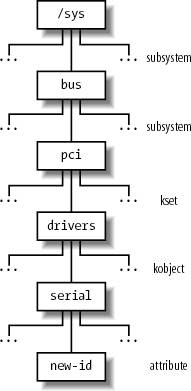

{% include JB/setup %}
{% raw %}
<div>


<a name="understandlk-CHP-13-SECT-2"></a>
<h3 class="docSection1Title">13.2. The Device Driver Model</h3>
<p class="docText1">Earlier versions of the Linux kernel offered few basic functionalities to the device driver developers: allocating dynamic memory, reserving a range of I/O addresses or an IRQ line, activating an interrupt service routine in response to a device's interrupt. Older hardware devices, in fact, were cumbersome and difficult to program, and two different hardware devices had little in common even if they were hosted on the same bus. Thus, there was no point in trying to offer a unifying model to the device driver developers.</p>
<p class="docText1">Things are different now. Bus types such as PCI put strong demands on the internal design of the hardware devices; as a consequence, recent hardware devices, even of different classes, sport similar functionalities. Drivers for such devices should typically take care of:</p>
<ul class="calibre11"><li class="calibre12"><p class="docText1">Power management (handling of different voltage levels on the device's power line)</p></li><li class="calibre12"><p class="docText1">Plug and play (transparent allocation of resources when configuring the device)</p></li><li class="calibre12"><p class="docText1">Hot-plugging (support for insertion and removal of the device while the system is running)</p></li></ul>
<p class="docText1">Power management is performed globally by the kernel on every hardware device in the system. For instance, when a battery-powered computer enters the "standby" state, the kernel must force every hardware device (hard disks, graphics card, sound card, network card, bus controllers, and so on) in a low-power state. Thus, each driver of a device that can be put in the "standby" state must include a callback function that puts the hardware device in the low-power state. Moreover, the hardware devices must be put in the "standby" state in a precise order, otherwise some devices could be left in the wrong power state. For instance, the kernel must put in "standby" first the hard disks and then their disk controller, because in the opposite case it would be impossible to send commands to the hard disks.</p>
<p class="docText1">To implement these kinds of operations, Linux 2.6 provides some data structures and helper functions that offer a unifying view of all buses, devices, and device drivers in the system; this framework is called the <span class="docEmphasis">device driver model</span><a name="IDX-CHP-13-3427"></a> 
.</p>
<a name="understandlk-CHP-13-SECT-2.1"></a>
<h4 class="docSection2Title">13.2.1. The sysfs Filesystem</h4>
<p class="docText1">The <span class="docEmphasis">sysfs</span><a name="IDX-CHP-13-3428"></a> 
 filesystem is a special filesystem similar to <i class="docEmphasis">/proc</i><a name="IDX-CHP-13-3429"></a> 
 that is usually mounted on the <i class="docEmphasis">/sys</i> directory. The <i class="docEmphasis">/proc</i> filesystem was the first special filesystem designed to allow User Mode applications to access kernel internal data structures. The <i class="docEmphasis">/sysfs</i> filesystem has essentially the same objective, but it provides additional information on kernel data structures; furthermore, <i class="docEmphasis">/sysfs</i> is organized in a more structured way than <i class="docEmphasis">/proc</i>. Likely, both <i class="docEmphasis">/proc</i> and <i class="docEmphasis">/sysfs</i> will continue to coexist in the near future.</p>
<p class="docText1">A goal of the <span class="docEmphasis">sysfs</span> filesystem is to expose the hierarchical relationships among the components of the device driver model. The related top-level directories of this filesystem are:</p>
<dl class="docText1"><dt class="calibre7"><br class="calibre7"/><p class="calibre14"><span class="docPubcolor"><span class="docEmphasis">block</span></span></p></dt>
<dd class="calibre20"><p class="docList">The block devices, independently from the bus to which they are connected.</p></dd><dt class="calibre7"><br class="calibre7"/><p class="calibre14"><span class="docPubcolor"><span class="docEmphasis">devices</span></span></p></dt>
<dd class="calibre20"><p class="docList">All hardware devices recognized by the kernel, organized according to the bus in which they are connected.</p></dd><dt class="calibre7"><br class="calibre7"/><p class="calibre14"><span class="docPubcolor"><span class="docEmphasis">bus</span></span></p></dt>
<dd class="calibre20"><p class="docList">The buses in the system, which host the devices.</p></dd><dt class="calibre7"><br class="calibre7"/><p class="calibre14"><span class="docPubcolor"><span class="docEmphasis">drivers</span></span></p></dt>
<dd class="calibre20"><p class="docList">The device drivers registered in the kernel.</p></dd><dt class="calibre7"><br class="calibre7"/><p class="calibre14"><span class="docPubcolor"><span class="docEmphasis">class</span></span></p></dt>
<dd class="calibre20"><p class="docList">The types of devices in the system (audio cards, network cards, graphics cards, and so on); the same class may include devices hosted by different buses and driven by different drivers.</p></dd><dt class="calibre7"><br class="calibre7"/><p class="calibre14"><span class="docPubcolor"><span class="docEmphasis">power</span></span></p></dt>
<dd class="calibre20"><p class="docList">Files to handle the power states of some hardware devices.</p></dd><dt class="calibre7"><br class="calibre7"/><p class="calibre14"><span class="docPubcolor"><span class="docEmphasis">firmware</span></span></p></dt>
<dd class="calibre20"><p class="docList">Files to handle the firmware of some hardware devices.</p></dd></dl>
<p class="docText1">Relationships between components of the device driver models are expressed in the <span class="docEmphasis">sysfs</span> filesystem as symbolic links between directories and files. For example, the <i class="docEmphasis">/sys/block/sda/device</i> file can be a symbolic link to a subdirectory nested in <i class="docEmphasis">/sys/devices/pci0000:00</i> representing the SCSI controller connected to the PCI bus. Moreover, the <i class="docEmphasis">/sys/block/sda/device/block</i> file is a symbolic link to <i class="docEmphasis">/sys/block/sda</i>, stating that this PCI device is the controller of the SCSI disk.</p>
<p class="docText1">The main role of regular files in the <i class="docEmphasis">sysfs</i> filesystem is to represent attributes of drivers and devices. For instance, the <i class="docEmphasis">dev</i> file in the <i class="docEmphasis">/sys/block/hda</i> directory contains the major and minor numbers of the master disk in the first IDE chain.</p>
<a name="understandlk-CHP-13-SECT-2.2"></a>
<h4 class="docSection2Title">13.2.2. Kobjects</h4>
<p class="docText1">The core data structure of the device driver model is a generic data structure named <span class="docEmphasis">kobject</span>, which is inherently tied to the <span class="docEmphasis">sysfs</span> filesystem: each kobject corresponds to a directory in that filesystem.</p>
<p class="docText1">Kobjects are embedded inside larger objectsthe so-called "containers"that describe the components of the device driver model.<sup class="docFootnote"><a class="pcalibre5 docLink pcalibre1" href="#understandlk-CHP-13-FN2">[*]</a></sup> The descriptors of buses, devices, and drivers are typical examples of containers; for instance, the descriptor of the first partition in the first IDE disk corresponds to the <i class="docEmphasis">/sys/block/hda/hda1</i> directory.</p><blockquote class="calibre22"><p class="docFootnote1"><sup class="calibre24"><a name="understandlk-CHP-13-FN2">[*]</a></sup> Kobjects are mainly used to implement the device driver model; however, there is an ongoing effort to change some other kernel componentssuch as the module subsystemso as to use them.</p></blockquote>
<p class="docText1">Embedding a kobject inside a container allows the kernel to:</p>
<ul class="calibre11"><li class="calibre12"><p class="docText1">Keep a reference counter for the container</p></li><li class="calibre12"><p class="docText1">Maintain hierarchical lists or sets of containers (for instance, a <span class="docEmphasis">sysfs</span> directory associated with a block device includes a different subdirectory for each disk partition)</p></li><li class="calibre12"><p class="docText1">Provide a User Mode view for the attributes of the container</p></li></ul>
<a name="understandlk-CHP-13-SECT-2.2.1"></a>
<h5 class="docSection3Title">13.2.2.1. Kobjects, ksets, and subsystems</h5><a name="IDX-CHP-13-3430"></a>
<a name="IDX-CHP-13-3431"></a>
<a name="IDX-CHP-13-3432"></a>
<a name="IDX-CHP-13-3433"></a>
<a name="IDX-CHP-13-3434"></a>
<a name="IDX-CHP-13-3435"></a>
<a name="IDX-CHP-13-3436"></a>
<a name="IDX-CHP-13-3437"></a>
<a name="IDX-CHP-13-3438"></a>
<a name="IDX-CHP-13-3439"></a>
<p class="docText1">A kobject is represented by a <tt class="calibre25">kobject</tt> data structure, whose fields are listed in <a class="pcalibre5 docLink pcalibre1" href="#understandlk-CHP-13-TABLE-2">Table 13-2</a>.</p>
<a name="understandlk-CHP-13-TABLE-2"></a><p class="calibre14"><table cellspacing="0" frame="hsides" rules="all" cellpadding="4" width="100%" class="calibre15"><caption class="calibre33"><h5 class="docFigureTitle">Table 13-2. The fields of the kobject data structure</h5></caption><colgroup class="calibre16"><col class="calibre17"/><col class="calibre17"/><col class="calibre17"/></colgroup><thead class="calibre18"><tr class="calibre34"><th class="thead" scope="col"><p class="docText1"><span class="calibre5">Type</span></p></th><th class="thead" scope="col"><p class="docText1"><span class="calibre5">Field</span></p></th><th class="thead" scope="col"><p class="docText1"><span class="calibre5">Description</span></p></th></tr></thead><tr class="calibre2"><td class="docTableCell"><p class="docText2"><tt class="calibre25">char *</tt></p></td><td class="docTableCell"><p class="docText2"><tt class="calibre25">k_name</tt></p></td><td class="docTableCell"><p class="docText2">Pointer to a string holding the name of the container</p></td></tr><tr class="calibre2"><td class="docTableCell"><p class="docText2"><tt class="calibre25">char []</tt></p></td><td class="docTableCell"><p class="docText2"><tt class="calibre25">name</tt></p></td><td class="docTableCell"><p class="docText2">String holding the name of the container, if it fits in 20 bytes</p></td></tr><tr class="calibre2"><td class="docTableCell"><p class="docText2"><tt class="calibre25">struct k_ref</tt></p></td><td class="docTableCell"><p class="docText2"><tt class="calibre25">kref</tt></p></td><td class="docTableCell"><p class="docText2">The reference counter for the container</p></td></tr><tr class="calibre2"><td class="docTableCell"><p class="docText2"><tt class="calibre25">struct list_head</tt></p></td><td class="docTableCell"><p class="docText2"><tt class="calibre25">entry</tt></p></td><td class="docTableCell"><p class="docText2">Pointers for the list in which the kobject is inserted</p></td></tr><tr class="calibre2"><td class="docTableCell"><p class="docText2"><tt class="calibre25">struct kobject *</tt></p></td><td class="docTableCell"><p class="docText2"><tt class="calibre25">parent</tt></p></td><td class="docTableCell"><p class="docText2">Pointer to the parent kobject, if any</p></td></tr><tr class="calibre2"><td class="docTableCell"><p class="docText2"><tt class="calibre25">struct kset *</tt></p></td><td class="docTableCell"><p class="docText2"><tt class="calibre25">kset</tt></p></td><td class="docTableCell"><p class="docText2">Pointer to the containing kset</p></td></tr><tr class="calibre2"><td class="docTableCell"><p class="docText2"><tt class="calibre25">struct kobj_type *</tt></p></td><td class="docTableCell"><p class="docText2"><tt class="calibre25">ktype</tt></p></td><td class="docTableCell"><p class="docText2">Pointer to the kobject type descriptor</p></td></tr><tr class="calibre2"><td class="docTableCell"><p class="docText2"><tt class="calibre25">struct dentry *</tt></p></td><td class="docTableCell"><p class="docText2"><tt class="calibre25">dentry</tt></p></td><td class="docTableCell"><p class="docText2">Pointer to the dentry of the <span class="docEmphasis">sysfs</span> file associated with the kobject</p></td></tr></table></p><br class="calibre7"/>
<p class="docText1">The <tt class="calibre25">ktype</tt> field points to a <tt class="calibre25">kobj_type</tt> object representing the "type" of the kobjectessentially, the type of the container that includes the kobject. The <tt class="calibre25">kobj_type</tt> data structure includes three fields: a <tt class="calibre25">release</tt> method (executed when the kobject is being freed), a <tt class="calibre25">sysfs_ops</tt> pointer to a table of <span class="docEmphasis">sysfs</span> operations, and a list of default attributes for the <span class="docEmphasis">sysfs</span> filesystem.</p>
<p class="docText1">The <tt class="calibre25">kref</tt> field is a structure of type <tt class="calibre25">k_ref</tt> consisting of a single <tt class="calibre25">refcount</tt> field. As the name implies, this field is the reference counter for the kobject, but it may act also as the reference counter for the container of the kobject. The <tt class="calibre25">kobject_get( )</tt> and <tt class="calibre25">kobject_put( )</tt> functions increase and decrease, respectively, the reference counter; if the counter reaches the value zero, the resources used by the kobject are released and the <tt class="calibre25">release</tt> method of the <tt class="calibre25">kobj_type</tt> object of the kobject is executed. This method, which is usually defined only if the container of the kobject was allocated dynamically, frees the container itself.</p>
<p class="docText1">The kobjects can be organized in a hierarchical tree by means of <span class="docEmphasis">ksets</span><a name="IDX-CHP-13-3440"></a> 
. A kset is a collection of kobjects of the same typethat is, included in the same type of container. The fields of the <tt class="calibre25">kset</tt> data structure are listed in <a class="pcalibre5 docLink pcalibre1" href="#understandlk-CHP-13-TABLE-3">Table 13-3</a>.</p>
<a name="understandlk-CHP-13-TABLE-3"></a><p class="calibre14"><table cellspacing="0" frame="hsides" rules="all" cellpadding="4" width="100%" class="calibre15"><caption class="calibre33"><h5 class="docFigureTitle">Table 13-3. The fields of the kset data structure</h5></caption><colgroup class="calibre16"><col class="calibre17"/><col class="calibre17"/><col class="calibre17"/></colgroup><thead class="calibre18"><tr class="calibre34"><th class="thead" scope="col"><p class="docText1"><span class="calibre5">Type</span></p></th><th class="thead" scope="col"><p class="docText1"><span class="calibre5">Field</span></p></th><th class="thead" scope="col"><p class="docText1"><span class="calibre5">Description</span></p></th></tr></thead><tr class="calibre2"><td class="docTableCell"><p class="docText2"><tt class="calibre25">struct subsystem *</tt></p></td><td class="docTableCell"><p class="docText2"><tt class="calibre25">subsys</tt></p></td><td class="docTableCell"><p class="docText2">Pointer to the subsystem descriptor</p></td></tr><tr class="calibre2"><td class="docTableCell"><p class="docText2"><tt class="calibre25">struct kobj_type *</tt></p></td><td class="docTableCell"><p class="docText2"><tt class="calibre25">ktype</tt></p></td><td class="docTableCell"><p class="docText2">Pointer to the kobject type descriptor of the kset</p></td></tr><tr class="calibre2"><td class="docTableCell"><p class="docText2"><tt class="calibre25">struct list_head</tt></p></td><td class="docTableCell"><p class="docText2"><tt class="calibre25">list</tt></p></td><td class="docTableCell"><p class="docText2">Head of the list of kobjects included in the kset</p></td></tr><tr class="calibre2"><td class="docTableCell"><p class="docText2"><tt class="calibre25">struct kobject</tt></p></td><td class="docTableCell"><p class="docText2"><tt class="calibre25">kobj</tt></p></td><td class="docTableCell"><p class="docText2">Embedded kobject (see text)</p></td></tr><tr class="calibre2"><td class="docTableCell"><p class="docText2"><tt class="calibre25">struct kset_hotplug_ops *</tt></p></td><td class="docTableCell"><p class="docText2"><tt class="calibre25">hotplug_ops</tt></p></td><td class="docTableCell"><p class="docText2">Pointer to a table of callback functions for kobject filtering and hot-plugging</p></td></tr></table></p><br class="calibre7"/>
<p class="docText1">The <tt class="calibre25">list</tt> field is the head of the doubly linked circular list of kobjects included in the kset; the <tt class="calibre25">ktype</tt> field points to the same <tt class="calibre25">kobj_type</tt> descriptor shared by all kobjects in the kset.</p>
<p class="docText1">The <tt class="calibre25">kobj</tt> field is a kobject embedded in the <tt class="calibre25">kset</tt> data structure; the <tt class="calibre25">parent</tt> field of the kobjects contained in the kset points to this embedded kobject. Thus, a kset is a collection of kobjects, but it relies on a kobject of higher level for reference counting and linking in the hierarchical tree. This design choice is code-efficient and allows the greatest flexibility. For instance, the <tt class="calibre25">kset_get( )</tt> and <tt class="calibre25">kset_put( )</tt> functions, which increase and decrease respectively the reference counter of the kset, simply invoke <tt class="calibre25">kobject_get( )</tt> and <tt class="calibre25">kobject_put( )</tt> on the embedded kobject; because the reference counter of a kset is merely the reference counter of the <tt class="calibre25">kobj</tt> kobject embedded in the kset. Moreover, thanks to the embedded kobject, the <tt class="calibre25">kset</tt> data structure can be embedded in a "container" object, exactly as for the <tt class="calibre25">kobject</tt> data structure. Finally, a kset can be made a member of another kset: it suffices to insert the embedded kobject in the higher-level kset.</p>
<p class="docText1">Collections of ksets called <span class="docEmphasis">subsystems</span><a name="IDX-CHP-13-3441"></a> 
 also exist. A subsystem may include ksets of different types, and it is represented by a <tt class="calibre25">subsystem</tt> data structure having just two fields:</p>
<dl class="docText1"><dt class="calibre7"><br class="calibre7"/><p class="calibre14"><span class="docPubcolor"><span class="docPubcolor"><span class="docMonofont">kset</span></span></span></p></dt>
<dd class="calibre20"><p class="docList">An embedded kset that stores the ksets included in the subsystem</p></dd><dt class="calibre7"><br class="calibre7"/><p class="calibre14"><span class="docPubcolor"><span class="docPubcolor"><span class="docMonofont">rwsem</span></span></span></p></dt>
<dd class="calibre20"><p class="docList">A read-write semaphore that protects all ksets and kobjects recursively included in the subsystem</p></dd></dl>
<p class="docText1">Even the <tt class="calibre25">subsystem</tt> data structure can be embedded in a larger "container" object; the reference counter of the container is thus the reference counter of the embedded subsystemthat is, the reference counter of the kobject embedded in the kset embedded in the subsystem. The <tt class="calibre25">subsys_get( )</tt> and <tt class="calibre25">subsys_put( )</tt> functions respectively increase and decrease this reference counter.</p>
<p class="docText1"><a class="pcalibre5 docLink pcalibre1" href="#understandlk-CHP-13-FIG-3">Figure 13-3</a> illustrates an example of the device driver model hierarchy. The <i class="docEmphasis">bus</i> subsystem includes a <i class="docEmphasis">pci</i> subsystem, which, in turn, includes a <i class="docEmphasis">drivers</i> kset. This kset contains a <i class="docEmphasis">serial</i> kobjectcorresponding to the device driver for the serial porthaving a single <i class="docEmphasis">new-id</i> attribute.</p>
<a name="understandlk-CHP-13-FIG-3"></a><p class="calibre14"><center class="calibre8">
<h5 class="docFigureTitle">Figure 13-3. An example of device driver model hierarchy</h5>
</center></p><br class="calibre7"/>
<a name="understandlk-CHP-13-SECT-2.2.2"></a>
<h5 class="docSection3Title">13.2.2.2. Registering kobjects, ksets, and subsystems</h5><a name="IDX-CHP-13-3442"></a>
<a name="IDX-CHP-13-3443"></a>
<a name="IDX-CHP-13-3444"></a>
<p class="docText1">As a general rule, if you want a kobject, kset, or subsystem to appear in the <span class="docEmphasis">sysfs</span> subtree, you must first <span class="docEmphasis">register</span> it. The directory associated with a kobject always appears in the directory of the parent kobject. For instance, the directories of kobjects included in the same kset appear in the directory of the kset itself. Therefore, the structure of the <span class="docEmphasis">sysfs</span> subtree represents the hierarchical relationships between the various registered kobjects and, consequently, between the various container objects. Usually, the top-level directories of the <span class="docEmphasis">sysfs</span> filesystem are associated with the registered subsystems.</p>
<p class="docText1">The <tt class="calibre25">kobject_register( )</tt> function initializes a kobject and adds the corresponding directory to the <span class="docEmphasis">sysfs</span> filesystem. Before invoking it, the caller should set the <tt class="calibre25">kset</tt> field in the kobject so that it points to the parent kset, if any. The <tt class="calibre25">kobject_unregister( )</tt> function removes a kobject's directory from the <span class="docEmphasis">sysfs</span> filesystem. To make life easier for kernel developers, Linux also offers the <tt class="calibre25">kset_register( )</tt> and <tt class="calibre25">kset_unregister( )</tt> functions, and the <tt class="calibre25">subsystem_register( )</tt> and <tt class="calibre25">subsystem_unregister( )</tt> functions, but they are essentially wrapper functions around <tt class="calibre25">kobject_register( )</tt> and <tt class="calibre25">kobject_unregister( )</tt>.</p>
<p class="docText1">As stated before, many kobject directories include regular files called <span class="docEmphasis">attributes</span><a name="IDX-CHP-13-3445"></a> 
. The <tt class="calibre25">sysfs_create_file( )</tt> function receives as its parameters the addresses of a kobject and an attribute descriptor, and creates the special file in the proper directory. Other relationships between the objects represented in the <span class="docEmphasis">sysfs</span> filesystem are established by means of symbolic links: the <tt class="calibre25">sysfs_create_link()</tt> function creates a symbolic link for a given kobject in a directory associated with another kobject.</p>
<a name="understandlk-CHP-13-SECT-2.3"></a>
<h4 class="docSection2Title">13.2.3. Components of the Device Driver Model</h4><a name="IDX-CHP-13-3446"></a>
<a name="IDX-CHP-13-3447"></a>
<a name="IDX-CHP-13-3448"></a>
<a name="IDX-CHP-13-3449"></a>
<a name="IDX-CHP-13-3450"></a>
<a name="IDX-CHP-13-3451"></a>
<a name="IDX-CHP-13-3452"></a>
<a name="IDX-CHP-13-3453"></a>
<a name="IDX-CHP-13-3454"></a>
<p class="docText1">The device driver model is built upon a handful of basic data structures, which represent buses, devices, device drivers, etc. Let us examine them.</p>
<a name="understandlk-CHP-13-SECT-2.3.1"></a>
<h5 class="docSection3Title">13.2.3.1. Devices</h5><a name="IDX-CHP-13-3455"></a>
<a name="IDX-CHP-13-3456"></a>
<a name="IDX-CHP-13-3457"></a>
<a name="IDX-CHP-13-3458"></a>
<a name="IDX-CHP-13-3459"></a>
<a name="IDX-CHP-13-3460"></a>
<p class="docText1">Each device in the device driver model is represented by a <tt class="calibre25">device</tt> object, whose fields are shown in <a class="pcalibre5 docLink pcalibre1" href="#understandlk-CHP-13-TABLE-4">Table 13-4</a>.</p>
<a name="understandlk-CHP-13-TABLE-4"></a><p class="calibre14"><table cellspacing="0" frame="hsides" rules="all" cellpadding="4" width="100%" class="calibre15"><caption class="calibre33"><h5 class="docFigureTitle">Table 13-4. The fields of the device object</h5></caption><colgroup class="calibre16"><col class="calibre17"/><col class="calibre17"/><col class="calibre17"/></colgroup><thead class="calibre18"><tr class="calibre34"><th class="thead" scope="col"><p class="docText1"><span class="calibre5">Type</span></p></th><th class="thead" scope="col"><p class="docText1"><span class="calibre5">Field</span></p></th><th class="thead" scope="col"><p class="docText1"><span class="calibre5">Description</span></p></th></tr></thead><tr class="calibre2"><td class="docTableCell"><p class="docText2"><tt class="calibre25">struct list_head</tt></p></td><td class="docTableCell"><p class="docText2"><tt class="calibre25">node</tt></p></td><td class="docTableCell"><p class="docText2">Pointers for the list of sibling devices</p></td></tr><tr class="calibre2"><td class="docTableCell"><p class="docText2"><tt class="calibre25">struct list_head</tt></p></td><td class="docTableCell"><p class="docText2"><tt class="calibre25">bus_list</tt></p></td><td class="docTableCell"><p class="docText2">Pointers for the list of devices on the same bus type</p></td></tr><tr class="calibre2"><td class="docTableCell"><p class="docText2"><tt class="calibre25">struct list_head</tt></p></td><td class="docTableCell"><p class="docText2"><tt class="calibre25">driver_list</tt></p></td><td class="docTableCell"><p class="docText2">Pointers for the driver's list of devices</p></td></tr><tr class="calibre2"><td class="docTableCell"><p class="docText2"><tt class="calibre25">struct list_head</tt></p></td><td class="docTableCell"><p class="docText2"><tt class="calibre25">children</tt></p></td><td class="docTableCell"><p class="docText2">Head of the list of children devices</p></td></tr><tr class="calibre2"><td class="docTableCell"><p class="docText2"><tt class="calibre25">struct device *</tt></p></td><td class="docTableCell"><p class="docText2"><tt class="calibre25">parent</tt></p></td><td class="docTableCell"><p class="docText2">Pointer to the parent device</p></td></tr><tr class="calibre2"><td class="docTableCell"><p class="docText2"><tt class="calibre25">struct kobject</tt></p></td><td class="docTableCell"><p class="docText2"><tt class="calibre25">kobj</tt></p></td><td class="docTableCell"><p class="docText2">Embedded kobject</p></td></tr><tr class="calibre2"><td class="docTableCell"><p class="docText2"><tt class="calibre25">char []</tt></p></td><td class="docTableCell"><p class="docText2"><tt class="calibre25">bus_id</tt></p></td><td class="docTableCell"><p class="docText2">Device position on the hosting bus</p></td></tr><tr class="calibre2"><td class="docTableCell"><p class="docText2"><tt class="calibre25">struct bus_type *</tt></p></td><td class="docTableCell"><p class="docText2"><tt class="calibre25">bus</tt></p></td><td class="docTableCell"><p class="docText2">Pointer to the hosting bus</p></td></tr><tr class="calibre2"><td class="docTableCell"><p class="docText2"><tt class="calibre25">struct device_driver *</tt></p></td><td class="docTableCell"><p class="docText2"><tt class="calibre25">driver</tt></p></td><td class="docTableCell"><p class="docText2">Pointer to the controlling device driver</p></td></tr><tr class="calibre2"><td class="docTableCell"><p class="docText2"><tt class="calibre25">void *</tt></p></td><td class="docTableCell"><p class="docText2"><tt class="calibre25">driver_data</tt></p></td><td class="docTableCell"><p class="docText2">Pointer to private data for the driver</p></td></tr><tr class="calibre2"><td class="docTableCell"><p class="docText2"><tt class="calibre25">void *</tt></p></td><td class="docTableCell"><p class="docText2"><tt class="calibre25">platform_data</tt></p></td><td class="docTableCell"><p class="docText2">Pointer to private data for legacy device drivers</p></td></tr><tr class="calibre2"><td class="docTableCell"><p class="docText2"><tt class="calibre25">struct dev_pm_info</tt></p></td><td class="docTableCell"><p class="docText2"><tt class="calibre25">power</tt></p></td><td class="docTableCell"><p class="docText2">Power management information</p></td></tr><tr class="calibre2"><td class="docTableCell"><p class="docText2">unsigned long</p></td><td class="docTableCell"><p class="docText2">detach_state</p></td><td class="docTableCell"><p class="docText2">Power state to be entered when unloading the device driver</p></td></tr><tr class="calibre2"><td class="docTableCell"><p class="docText2">unsigned long long *</p></td><td class="docTableCell"><p class="docText2">dma_mask</p></td><td class="docTableCell"><p class="docText2">Pointer to the DMA mask of the device (see the later section "<a class="pcalibre5 docLink pcalibre1" href="understandlk-CHP-13-SECT-4.html#understandlk-CHP-13-SECT-4.5">Direct Memory Access (DMA)</a>")</p></td></tr><tr class="calibre2"><td class="docTableCell"><p class="docText2">unsigned long long</p></td><td class="docTableCell"><p class="docText2">coherent_dma_mask</p></td><td class="docTableCell"><p class="docText2">Mask for coherent DMA of the device</p></td></tr><tr class="calibre2"><td class="docTableCell"><p class="docText2">struct list_head</p></td><td class="docTableCell"><p class="docText2">dma_pools</p></td><td class="docTableCell"><p class="docText2">Head of a list of aggregate DMA buffers</p></td></tr><tr class="calibre2"><td class="docTableCell"><p class="docText2">struct dma_coherent_mem *</p></td><td class="docTableCell"><p class="docText2">dma_mem</p></td><td class="docTableCell"><p class="docText2">Pointer to a descriptor of the coherent DMA memory used by the device (see the later section "<a class="pcalibre5 docLink pcalibre1" href="understandlk-CHP-13-SECT-4.html#understandlk-CHP-13-SECT-4.5">Direct Memory Access (DMA)</a>")</p></td></tr><tr class="calibre2"><td class="docTableCell"><p class="docText2">void (*)(struct device *)</p></td><td class="docTableCell"><p class="docText2">release</p></td><td class="docTableCell"><p class="docText2">Callback function for releasing the device descriptor</p></td></tr></table></p><br class="calibre7"/>
<p class="docText1">The <tt class="calibre25">device</tt> objects are globally collected in the <tt class="calibre25">devices_subsys</tt> subsystem, which is associated with the <i class="docEmphasis">/sys/devices</i> directory (see the earlier section "<a class="pcalibre5 docLink pcalibre1" href="#understandlk-CHP-13-SECT-2.2">Kobjects</a>"). The devices are organized hierarchically: a device is the "parent" of some "children" devices if the children devices cannot work properly without the parent device. For instance, in a PCI-based computer, a bridge between the PCI bus and the USB bus is the parent device of every device hosted on the USB bus. The <tt class="calibre25">parent</tt> field of the <tt class="calibre25">device</tt> object points to the descriptor of the parent device, the <tt class="calibre25">children</tt> field is the head of the list of children devices, and the <tt class="calibre25">node</tt> field stores the pointers to the adjacent elements in the children list. The parenthood relationships between the kobjects embedded in the <tt class="calibre25">device</tt> objects reflect also the device hierarchy; thus, the structure of the directories below <i class="docEmphasis">/sys/devices</i> matches the physical organization of the hardware devices.</p>
<p class="docText1">Each driver keeps a list of <tt class="calibre25">device</tt> objects including all managed devices; the <tt class="calibre25">driver_list</tt> field of the <tt class="calibre25">device</tt> object stores the pointers to the adjacent elements, while the <tt class="calibre25">driver</tt> field points to the descriptor of the device driver. For each bus type, moreover, there is a list including all devices that are hosted on the buses of the given type; the <tt class="calibre25">bus_list</tt> field of the <tt class="calibre25">device</tt> object stores the pointers to the adjacent elements, while the <tt class="calibre25">bus</tt> field points to the bus type descriptor.</p>
<p class="docText1">A reference counter keeps track of the usage of the <tt class="calibre25">device</tt> object; it is included in the <tt class="calibre25">kobj</tt> kobject embedded in the descriptor. The counter is increased by invoking <tt class="calibre25">get_device( )</tt>, and it is decreased by invoking <tt class="calibre25">put_device( )</tt>.</p>
<p class="docText1">The <tt class="calibre25">device_register( )</tt> function inserts a new <tt class="calibre25">device</tt> object in the device driver model, and automatically creates a new directory for it under <i class="docEmphasis">/sys/devices</i><a name="IDX-CHP-13-3461"></a> 
. Conversely, the <tt class="calibre25">device_unregister( )</tt> function removes a device from the device driver model.</p>
<p class="docText1">Usually, the <tt class="calibre25">device</tt> object is statically embedded in a larger descriptor. For instance, PCI devices are described by <tt class="calibre25">pci_dev</tt> data structures; the <tt class="calibre25">dev</tt> field of this structure is a <tt class="calibre25">device</tt> object, while the other fields are specific to the PCI bus. The <tt class="calibre25">device_register( )</tt> and <tt class="calibre25">device_unregister( )</tt> functions are executed when the device is being registered or de-registered in the PCI kernel layer.</p>
<a name="understandlk-CHP-13-SECT-2.3.2"></a>
<h5 class="docSection3Title">13.2.3.2. Drivers</h5><a name="IDX-CHP-13-3462"></a>
<a name="IDX-CHP-13-3463"></a>
<a name="IDX-CHP-13-3464"></a>
<a name="IDX-CHP-13-3465"></a>
<a name="IDX-CHP-13-3466"></a>
<p class="docText1">Each driver in the device driver model is described by a <tt class="calibre25">device_driver</tt> object, whose fields are listed in <a class="pcalibre5 docLink pcalibre1" href="#understandlk-CHP-13-TABLE-5">Table 13-5</a>.</p>
<a name="understandlk-CHP-13-TABLE-5"></a><p class="calibre14"><table cellspacing="0" frame="hsides" rules="all" cellpadding="4" width="100%" class="calibre15"><caption class="calibre33"><h5 class="docFigureTitle">Table 13-5. The fields of the device_driver object</h5></caption><colgroup class="calibre16"><col class="calibre17"/><col class="calibre17"/><col class="calibre17"/></colgroup><thead class="calibre18"><tr class="calibre34"><th class="thead" scope="col"><p class="docText1"><span class="calibre5">Type</span></p></th><th class="thead" scope="col"><p class="docText1"><span class="calibre5">Field</span></p></th><th class="thead" scope="col"><p class="docText1"><span class="calibre5">Description</span></p></th></tr></thead><tr class="calibre2"><td class="docTableCell"><p class="docText2"><tt class="calibre25">char *</tt></p></td><td class="docTableCell"><p class="docText2"><tt class="calibre25">name</tt></p></td><td class="docTableCell"><p class="docText2">Name of the device driver</p></td></tr><tr class="calibre2"><td class="docTableCell"><p class="docText2"><tt class="calibre25">struct bus_type *</tt></p></td><td class="docTableCell"><p class="docText2"><tt class="calibre25">bus</tt></p></td><td class="docTableCell"><p class="docText2">Pointer to descriptor of the bus that hosts the supported devices</p></td></tr><tr class="calibre2"><td class="docTableCell"><p class="docText2"><tt class="calibre25">struct semaphore</tt></p></td><td class="docTableCell"><p class="docText2"><tt class="calibre25">unload_sem</tt></p></td><td class="docTableCell"><p class="docText2">Semaphore to forbid device driver unloading; it is released when the reference counter reaches zero</p></td></tr><tr class="calibre2"><td class="docTableCell"><p class="docText2"><tt class="calibre25">struct kobject</tt></p></td><td class="docTableCell"><p class="docText2"><tt class="calibre25">kobj</tt></p></td><td class="docTableCell"><p class="docText2">Embedded kobject</p></td></tr><tr class="calibre2"><td class="docTableCell"><p class="docText2"><tt class="calibre25">struct list_head</tt></p></td><td class="docTableCell"><p class="docText2"><tt class="calibre25">devices</tt></p></td><td class="docTableCell"><p class="docText2">Head of the list including all devices supported by the driver</p></td></tr><tr class="calibre2"><td class="docTableCell"><p class="docText2">struct module *</p></td><td class="docTableCell"><p class="docText2">owner</p></td><td class="docTableCell"><p class="docText2">Identifies the module that implements the device driver, if any (see <a class="pcalibre5 docLink pcalibre1" href="understandlk-APP-B.html#understandlk-APP-B">Appendix B</a>)</p></td></tr><tr class="calibre2"><td class="docTableCell"><p class="docText2"><tt class="calibre25">int (*)(struct device *)</tt></p></td><td class="docTableCell"><p class="docText2"><tt class="calibre25">probe</tt></p></td><td class="docTableCell"><p class="docText2">Method for probing a device (checking that it can be handled by the device driver)</p></td></tr><tr class="calibre2"><td class="docTableCell"><p class="docText2"><tt class="calibre25">int (*)(struct device *)</tt></p></td><td class="docTableCell"><p class="docText2"><tt class="calibre25">remove</tt></p></td><td class="docTableCell"><p class="docText2">Method invoked on a device when it is removed</p></td></tr><tr class="calibre2"><td class="docTableCell"><p class="docText2"><tt class="calibre25">void (*)(struct device *)</tt></p></td><td class="docTableCell"><p class="docText2"><tt class="calibre25">shutdown</tt></p></td><td class="docTableCell"><p class="docText2">Method invoked on a device when it is powered off (shut down)</p></td></tr><tr class="calibre2"><td class="docTableCell"><p class="docText2"><tt class="calibre25">int (*)(struct device *, unsigned long, unsigned long)</tt></p></td><td class="docTableCell"><p class="docText2"><tt class="calibre25">suspend</tt></p></td><td class="docTableCell"><p class="docText2">Method invoked on a device when it is put in low-power state</p></td></tr><tr class="calibre2"><td class="docTableCell"><p class="docText2"><tt class="calibre25">int (*)(struct device *, unsigned long)</tt></p></td><td class="docTableCell"><p class="docText2"><tt class="calibre25">resume</tt></p></td><td class="docTableCell"><p class="docText2">Method invoked on a device when it is put back in the normal state (full power)</p></td></tr></table></p><br class="calibre7"/>
<p class="docText1">The <tt class="calibre25">device_driver</tt> object includes four methods for handling hot-plugging, plug and play, and power management. The <tt class="calibre25">probe</tt> method is invoked whenever a bus device driver discovers a device that could possibly be handled by the driver; the corresponding function should probe the hardware to perform further checks on the device. The <tt class="calibre25">remove</tt> method is invoked on a hot-pluggable device whenever it is removed; it is also invoked on every device handled by the driver when the driver itself is unloaded. The <tt class="calibre25">shutdown</tt>, <tt class="calibre25">suspend</tt>, and <tt class="calibre25">resume</tt> methods are invoked on a device when the kernel must change its power state.</p>
<p class="docText1">The reference counter included in the <tt class="calibre25">kobj</tt> kobject embedded in the descriptor keeps track of the usage of the <tt class="calibre25">device_driver</tt> object. The counter is increased by invoking <tt class="calibre25">get_driver( )</tt>, and it is decreased by invoking <tt class="calibre25">put_driver( )</tt>.</p>
<p class="docText1">The <tt class="calibre25">driver_register( )</tt> function inserts a new <tt class="calibre25">device_driver</tt> object in the device driver model, and automatically creates a new directory for it in the <span class="docEmphasis">sysfs</span> filesystem. Conversely, the <tt class="calibre25">driver_unregister( )</tt> function removes a driver from the device driver model.</p>
<p class="docText1">Usually, the <tt class="calibre25">device_driver</tt> object is statically embedded in a larger descriptor. For instance, PCI device drivers<a name="IDX-CHP-13-3467"></a> 
 are described by <tt class="calibre25">pci_driver</tt> data structures; the <tt class="calibre25">driver</tt> field of this structure is a <tt class="calibre25">device_driver</tt> object, while the other fields are specific to the PCI bus.</p>
<a name="understandlk-CHP-13-SECT-2.3.3"></a>
<h5 class="docSection3Title">13.2.3.3. Buses</h5><a name="IDX-CHP-13-3468"></a>
<a name="IDX-CHP-13-3469"></a>
<a name="IDX-CHP-13-3470"></a>
<p class="docText1">Each bus type supported by the kernel is described by a <tt class="calibre25">bus_type</tt> object, whose fields are listed in <a class="pcalibre5 docLink pcalibre1" href="#understandlk-CHP-13-TABLE-6">Table 13-6</a>.</p>
<a name="understandlk-CHP-13-TABLE-6"></a><p class="calibre14"><table cellspacing="0" frame="hsides" rules="all" cellpadding="4" width="100%" class="calibre15"><caption class="calibre33"><h5 class="docFigureTitle">Table 13-6. The fields of the bus_type object</h5></caption><colgroup class="calibre16"><col class="calibre17"/><col class="calibre17"/><col class="calibre17"/></colgroup><thead class="calibre18"><tr class="calibre34"><th class="thead" scope="col"><p class="docText1"><span class="calibre5">Type</span></p></th><th class="thead" scope="col"><p class="docText1"><span class="calibre5">Field</span></p></th><th class="thead" scope="col"><p class="docText1"><span class="calibre5">Description</span></p></th></tr></thead><tr class="calibre2"><td class="docTableCell"><p class="docText2"><tt class="calibre25">char *</tt></p></td><td class="docTableCell"><p class="docText2"><tt class="calibre25">name</tt></p></td><td class="docTableCell"><p class="docText2">Name of the bus type</p></td></tr><tr class="calibre2"><td class="docTableCell"><p class="docText2"><tt class="calibre25">struct subsystem</tt></p></td><td class="docTableCell"><p class="docText2"><tt class="calibre25">subsys</tt></p></td><td class="docTableCell"><p class="docText2">Kobject subsystem associated with this bus type</p></td></tr><tr class="calibre2"><td class="docTableCell"><p class="docText2"><tt class="calibre25">struct kset</tt></p></td><td class="docTableCell"><p class="docText2"><tt class="calibre25">drivers</tt></p></td><td class="docTableCell"><p class="docText2">The set of kobjects of the drivers</p></td></tr><tr class="calibre2"><td class="docTableCell"><p class="docText2"><tt class="calibre25">struct kset</tt></p></td><td class="docTableCell"><p class="docText2"><tt class="calibre25">devices</tt></p></td><td class="docTableCell"><p class="docText2">The set of kobjects of the devices</p></td></tr><tr class="calibre2"><td class="docTableCell"><p class="docText2">struct bus_attribute *</p></td><td class="docTableCell"><p class="docText2">bus_attrs</p></td><td class="docTableCell"><p class="docText2">Pointer to the object including the bus attributes and the methods for exporting them to the <span class="docEmphasis">sysfs</span> filesystem</p></td></tr><tr class="calibre2"><td class="docTableCell"><p class="docText2">struct device_attribute *</p></td><td class="docTableCell"><p class="docText2">dev_attrs</p></td><td class="docTableCell"><p class="docText2">Pointer to the object including the device attributes and the methods for exporting them to the <span class="docEmphasis">sysfs</span> filesystem</p></td></tr><tr class="calibre2"><td class="docTableCell"><p class="docText2">struct driver_attribute *</p></td><td class="docTableCell"><p class="docText2">drv_attrs</p></td><td class="docTableCell"><p class="docText2">Pointer to the object including the device driver attributes and the methods for exporting them to the <span class="docEmphasis">sysfs</span> filesystem</p></td></tr><tr class="calibre2"><td class="docTableCell"><p class="docText2"><tt class="calibre25">int (*)(struct device *, struct device_driver *)</tt></p></td><td class="docTableCell"><p class="docText2"><tt class="calibre25">match</tt></p></td><td class="docTableCell"><p class="docText2">Method for checking whether a given driver supports a given device</p></td></tr><tr class="calibre2"><td class="docTableCell"><p class="docText2"><tt class="calibre25">int (*)(struct device *, char **, int, char *, int)</tt></p></td><td class="docTableCell"><p class="docText2"><tt class="calibre25">hotplug</tt></p></td><td class="docTableCell"><p class="docText2">Method invoked when a device is being registered</p></td></tr><tr class="calibre2"><td class="docTableCell"><p class="docText2"><tt class="calibre25">int (*)(struct device *, unsigned long)</tt></p></td><td class="docTableCell"><p class="docText2"><tt class="calibre25">suspend</tt></p></td><td class="docTableCell"><p class="docText2">Method for saving the hardware context state and changing the power level of a device</p></td></tr><tr class="calibre2"><td class="docTableCell"><p class="docText2"><tt class="calibre25">int (*)(struct device *)</tt></p></td><td class="docTableCell"><p class="docText2"><tt class="calibre25">resume</tt></p></td><td class="docTableCell"><p class="docText2">Method for changing the power level and restoring the hardware context of a device</p></td></tr></table></p><br class="calibre7"/>
<p class="docText1">Each <tt class="calibre25">bus_type</tt> object includes an embedded subsystem; the subsystem stored in the <tt class="calibre25">bus_subsys</tt> variable collects all subsystems embedded in the <tt class="calibre25">bus_type</tt> objects. The <tt class="calibre25">bus_subsys</tt> subsystem is associated with the <i class="docEmphasis">/sys/bus</i> directory; thus, for example, there exists a <span class="docEmphasis">/sys/bus/pci</span> directory associated with the PCI bus type. The per-bus subsystem typically includes only two ksets named <span class="docEmphasis">drivers</span> and <span class="docEmphasis">devices</span> (corresponding to the <tt class="calibre25">drivers</tt> and <tt class="calibre25">devices</tt> fields of the <tt class="calibre25">bus_type</tt> object, respectively).</p>
<p class="docText1">The <tt class="calibre25">drivers</tt> kset contains the <tt class="calibre25">device_driver</tt> descriptors of all device drivers pertaining to the bus type, while the <tt class="calibre25">devices</tt> kset contains the <tt class="calibre25">device</tt> descriptors of all devices of the given bus type. Because the directories of the devices' kobjects already appear in the <span class="docEmphasis">sysfs</span> filesystem under <i class="docEmphasis">/sys/devices</i>, the devices directory of the per-bus subsystem stores symbolic links pointing to directories under <i class="docEmphasis">/sys/devices</i>. The <tt class="calibre25">bus_for_each_drv( )</tt> and <tt class="calibre25">bus_for_each_dev( )</tt> functions iterate over the elements of the lists of drivers and devices, respectively.</p>
<p class="docText1">The <tt class="calibre25">match</tt> method is executed when the kernel must check whether a given device can be handled by a given driver. Even if each device's identifier has a format specific to the bus that hosts the device, the function that implements the method is usually simple, because it searches the device's identifier in the driver's table of supported identifiers. The <tt class="calibre25">hotplug</tt> method is executed when a device is being registered in the device driver model; the implementing function should add bus-specific information to be passed as environment variables to a User Mode program that is notified about the new available device (see the later section "<a class="pcalibre5 docLink pcalibre1" href="understandlk-CHP-13-SECT-4.html#understandlk-CHP-13-SECT-4.1">Device Driver Registration</a>"). Finally, the <tt class="calibre25">suspend</tt> and <tt class="calibre25">resume</tt> methods are executed when a device on a bus of the given type must change its power state.</p>
<a name="understandlk-CHP-13-SECT-2.3.4"></a>
<h5 class="docSection3Title">13.2.3.4. Classes</h5><a name="IDX-CHP-13-3471"></a>
<a name="IDX-CHP-13-3472"></a>
<a name="IDX-CHP-13-3473"></a>
<a name="IDX-CHP-13-3474"></a>
<p class="docText1">Each class is described by a <tt class="calibre25">class</tt> object. All class objects belong to the <tt class="calibre25">class_subsys</tt> subsystem associated with the <span class="docEmphasis">/sys/class</span> directory. Each <tt class="calibre25">class</tt> object, moreover, includes an embedded subsystem; thus, for example, there exists a <span class="docEmphasis">/sys/class/input</span> directory associated with the <span class="docEmphasis">input</span> class of the device driver model.</p>
<p class="docText1">Each class object includes a list of <tt class="calibre25">class_device</tt> descriptors, each of which represents a single <span class="docEmphasis">logical device</span> belonging to the class. The <tt class="calibre25">class_device</tt> structure includes a <tt class="calibre25">dev</tt> field that points to a <tt class="calibre25">device</tt> descriptor, thus a logical device always refers to a given device in the device driver model. However, there can be several <tt class="calibre25">class_device</tt> descriptors that refer to the same device. In fact, a hardware device might include several different sub-devices, each of which requires a different User Mode interface. For example, the sound card is a hardware device that usually includes a DSP, a mixer, a game port interface, and so on; each sub-device requires its own User Mode interface, thus it is associated with its own directory in the <span class="docEmphasis">sysfs</span> filesystem.</p>
<p class="docText1">Device drivers in the same class are expected to offer the same functionalities to the User Mode applications; for instance, all device drivers of sound cards should offer a way to write sound samples to the DSP.</p>
<p class="docText1">The classes<a name="IDX-CHP-13-3475"></a> 
 of the device driver model are essentially aimed to provide a standard method for exporting to User Mode applications the interfaces of the logical devices<a name="IDX-CHP-13-3476"></a> 
. Each <tt class="calibre25">class_device</tt> descriptor embeds a kobject having an attribute (special file) named <i class="docEmphasis">dev</i>. Such attribute stores the major and minor numbers of the device file that is needed to access to the corresponding logical device (see the next section).</p>
<a href="31071535.html"></a>
<br class="calibre7"/>

</div>

{% endraw %}

